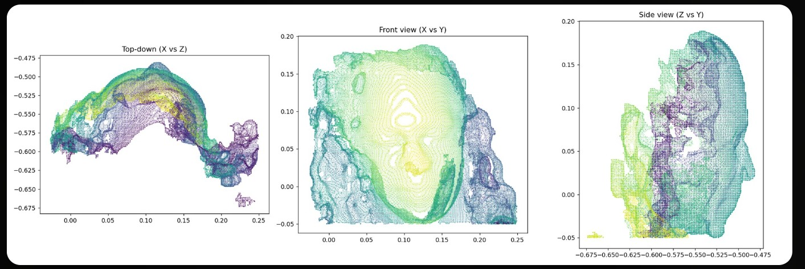
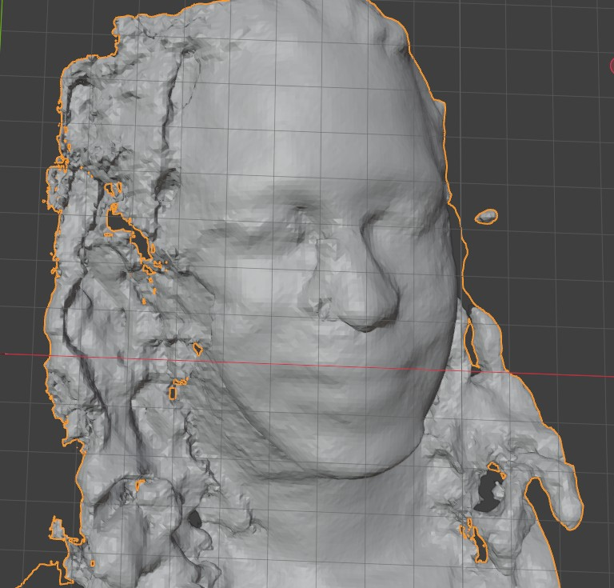
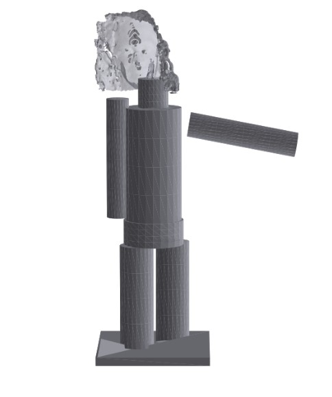
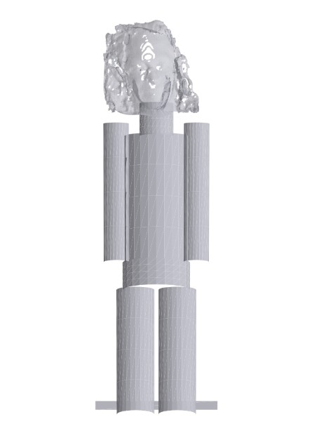
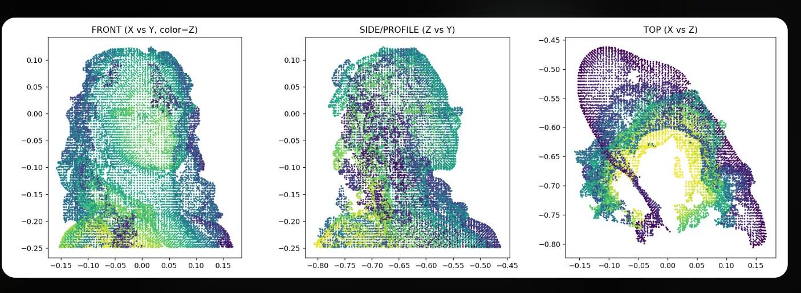
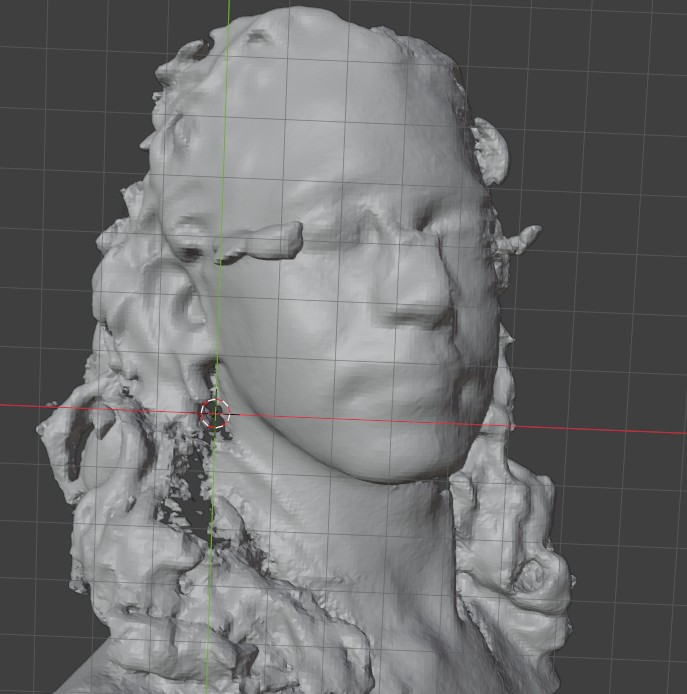

Tech Projects
A brief look into my ongoing tech projects
Kinect Project
A Summary
The goal of this project is to take a 3D head scan captured with an original Xbox 360 Kinect sensor and fuse it onto a 3D-printable action figure body, combining computer vision, mesh processing, and a lot of hands-on debugging into one pipeline.
Using Microsoft's KinectFusion algorithm, the Kinect's depth camera builds up a 3D model of a person's head as the sensor moves around them frame by frame; from there, a custom Python pipeline (built on Open3D) cleans up the raw scan, closes the gaps a single scanning pass leaves behind, and fuses the head onto a body model to produce a print-ready file.
The Process So Far
The first goal was to create a usable work envirnment to allow for a clean complete head scan with minimal background static using Kinect Fusion Explorer. The first attempt produced a head scan that was missing a large portion of nearly 50% of the back of the subject's head. Adjustments to lighting, including minimizing natural light and using two standing LED lights, the missing gap was able to be reduced to about 30%.
The next goal was to create a simple body to test the fit of the head scan onto. Body models were built as placeholders, fusing the head onto the body as one solid piece rather than building a swappable joint. The first attemp left the base sitting off the print bed and an arm floating disconnected from the body.
Next Steps
The next step is to continue refining the capture setup to close the remaining gap even further, adjusting the sensor's movement speed and depth range to keep tracking from failing mid-scan. Once a scan comes back with a small enough opening, it will run through a cleanup and reconstruction process that isolates the head from any background noise and rebuilds it into a proper 3D surface, followed by a hole-filling step that closes whatever gap remains with texture matched to the subject's own hair rather than a generic patch. From there, the completed head model will be fused onto a body model to produce a final print-ready figure.
See the Process for Yourself





